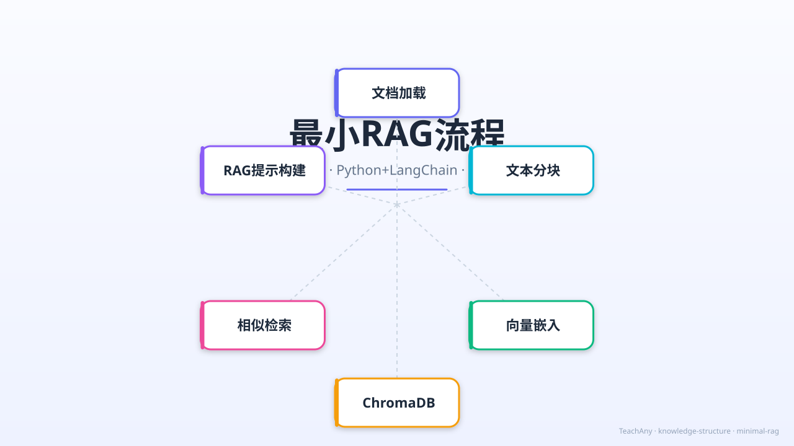

Gallery
v1.0.0 · skill v7.18.0
没有RAG的LLM为什么会胡说八道？怎么让AI基于真实文档回答？

选一个你关心的问题，后面的内容会围绕它展开。
选择或输入后，本课会围绕你的问题展开。
在开始之前，先测测你的直觉。选一个你觉得最对的：
已经知道：LLM在训练时学到了大量世界知识，能流畅对话。
但是问题是：LLM的训练数据有截止日期，且不包含你的私有文档。当你问它"上周的会议纪要说了什么"，它只能根据统计模式"猜测"，这就是幻觉。
所以这一段要解决：RAG在推理时先从外部文档检索相关信息，注入提示词，让LLM"有据可依"。
问："2025年Q3营收？" → 可能编造数字。因为训练数据里没有这份财务报告。
系统先检索Q3财报片段 → 注入提示词 → LLM基于真实数据回答，并引用来源。
RAG = 检索增强生成。整个流程可以分为五个清晰的步骤：
用 TextLoader 读取 PDF、TXT、Markdown 等文档
用 RecursiveCharacterTextSplitter 将长文档切成小块（chunk）
用 OpenAIEmbeddings 把每个文本块转成向量
存入 ChromaDB 向量数据库；查询时用相似度搜索找到最相关块
将检索到的文本块注入 RAG Prompt Template，由 LLM 生成最终答案
每个步骤悬停可查看详细信息。这就是一个完整的RAG数据流。
以下代码可以直接复制运行。确保先安装依赖：pip install langchain langchain-openai chromadb
💡 提示：这段代码会生成 ChromaDB 持久化文件到 ./chroma_db/ 目录。实际项目建议设置 OPENAI_API_KEY 环境变量。
同样的查询，不同的分块策略和检索参数，结果差异很大：
chunk_size=2000（太大），k=1（太少）
查询："LLM幻觉的原因"
返回：一段关于transformer架构的文字，不相关。
chunk_size=500，chunk_overlap=50，k=3
查询："LLM幻觉的原因"
返回：三段关于幻觉原因的文字，高度相关。
🔑 关键参数：
chunk_size：每块最大字符数（300-1000是常见范围）
chunk_overlap：相邻块重叠字符数（避免割裂语义）
k：检索返回的top-k块数量（3-5通常合适）
检索方式：similarity（余弦相似度）vs MMR（最大边际相关性，增加多样性）
使用 LangChain 的 chain 把检索和生成串联成一个完整的问答系统：
以下关于RAG的说法，哪一个是正确的？
你要为公司的内部技术文档（200篇Markdown文件）搭建一个RAG问答系统。以下哪种做法是最佳实践？
RAG回答了我们一开始的问题：没有RAG的LLM会胡说八道——因为它只能依赖训练数据中的统计模式。而RAG通过检索真实文档片段，为LLM提供"参考答案"，让生成的内容有据可依。
本节点的前置、后续和同域知识。